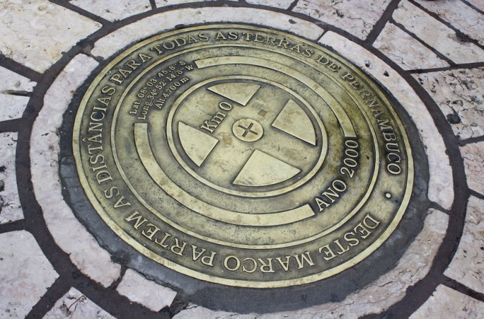

Bem-vindo ao Marco Zero!
Conheça o local
O Marco Zero, na Praça Rio Branco, é conhecido como local de fundação da cidade do Recife e também como ponto inicial de contagem das distâncias calculadas a partir da cidade. O lugar é um dos pontos mais importantes na capital Pernambucana, pois é também uma região de forte movimento durante o Carnaval.
Aproveite sua visita para tirar uma foto com os dois marcos (o antigo e o novo), observar a vista para o Parque de Esculturas e os edifícios do Centro Cultural da Caixa e da Associação Comercial de Pernambuco.
Se quiser fazer compras, vale a pena visitar o novo Mercado de Artesanato, que também fica no local.
Merecem um Insta!
- Marco Zero atual 
- Marco Zero antigo
- Praça no entorno
- Logo de Recife


 Conheça outros locais de interesse
Conheça outros locais de interesse